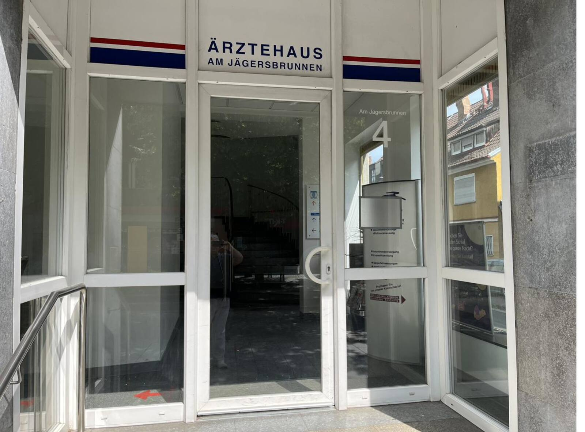
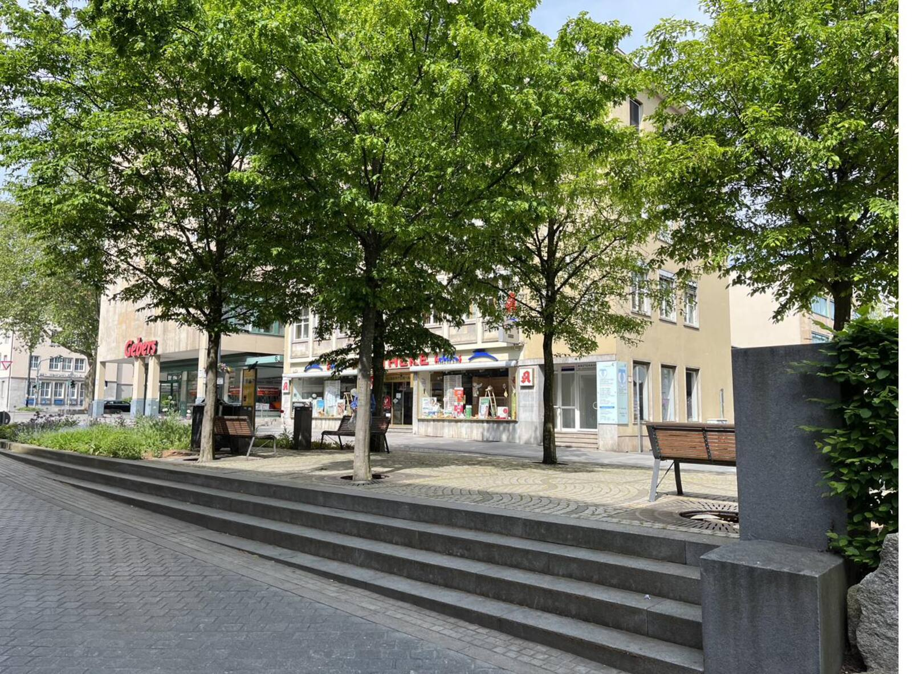

Hausarztpraxis René Lutz
Facharzt für Innere Medizin · Zusatzbezeichnungen Naturheilverfahren und Akupunktur
Persönlich. Vorausschauend. Internistisch fundiert.
Seit 2008 begleite ich Patientinnen und Patienten in Schweinfurt – als Einzelpraxis mit einem festen Ansprechpartner, der Ihre Krankengeschichte kennt.

Herzlich willkommen
Seit 2008 begleite ich Patientinnen und Patienten in Schweinfurt – bei akuten Erkrankungen ebenso wie in der langfristigen Betreuung chronischer Herz-, Kreislauf- und Stoffwechselerkrankungen. Als hausärztlich tätiger Internist verbinde ich dabei die persönliche Begleitung einer Hausarztpraxis mit der diagnostischen Erfahrung der Inneren Medizin.
Als inhabergeführte Einzelpraxis legen wir Wert auf Kontinuität: Sie haben einen festen Ansprechpartner, der Ihre Krankengeschichte kennt.
Ein besonderer Schwerpunkt ist die Vorsorge. Viele Erkrankungen entwickeln sich über Jahre unbemerkt. Mein Ziel ist es, Risiken frühzeitig zu erkennen und Erkrankungen möglichst zu verhindern – bevor Beschwerden entstehen.
Am Anfang jeder Behandlung steht das Zuhören: Ihre Beschwerden, Ihre Fragen und Ihre persönliche Lebenssituation. Körperliche und seelische Gesundheit beeinflussen sich gegenseitig – beides ernst zu nehmen ist für mich selbstverständlich.
Über die nächsten Schritte entscheiden wir gemeinsam – medizinisch sinnvoll und abgestimmt auf Ihre persönliche Situation.

Sprechzeiten und Kontakt auf einen Blick
Sprechzeiten
- Montag8–11 · 15–17 Uhr
- Dienstag8–11 · 15–17 Uhr
- Mittwoch7–11 Uhr
- Donnerstag8–11 · 15–17 Uhr
- Freitag8–11 Uhr
Sprechstunde nach Vereinbarung · Infektionssprechstunde Mo–Fr 11–12 Uhr (bitte vorab anrufen)
Praxis
Jägersbrunnen 4
97421 Schweinfurt
Zugelassene Gelbfieberimpfstelle
Unsere Leistungen
Ein Überblick über die Schwerpunkte der Praxis – ausführliche Informationen finden Sie auf der Leistungsseite.
Hausärztliche & internistische Versorgung
Erste Anlaufstelle bei akuten Beschwerden und chronischen Erkrankungen. Diagnostik, Behandlung und langfristige Begleitung – bei Bedarf in Abstimmung mit Fachärzten und Kliniken.
Mehr erfahrenVorsorge & Früherkennung
Gesetzliche Check-up-Untersuchungen und die Einschätzung Ihres persönlichen Risikos für Herz-Kreislauf-Erkrankungen. Dazu Impfberatung nach den Empfehlungen der STIKO.
Mehr erfahrenReisemedizin & Gelbfieberimpfstelle
Beratung vor Fernreisen, Reiseimpfungen und Hinweise zur Gesundheitsvorsorge unterwegs. Die Praxis ist zugelassene Gelbfieberimpfstelle.
Mehr erfahrenTermin vereinbaren
Termine vergeben wir telefonisch während der Sprechzeiten. Bei akuten Beschwerden melden Sie sich bitte möglichst früh am Vormittag – wir finden eine Lösung.
Für Rezept- und Überweisungswünsche erreichen Sie uns ebenfalls telefonisch oder per E-Mail.
09721 21206 anrufenSo finden Sie uns
Hausarztpraxis René Lutz
Jägersbrunnen 4
97421 Schweinfurt
Die Praxis liegt zentral in der Schweinfurter Innenstadt, der Haupteingang direkt am Jägersbrunnen. Ein barrierefreier Zugang mit Aufzug befindet sich in der Hirtengasse – dort liegt auch ein Behindertenparkplatz direkt vor der Tür.
Parkhäuser finden Sie am ehemaligen Galeria Kaufhof, an der Stadtgalerie und an der Kunsthalle. Der Busbahnhof am Roßmarkt ist nur wenige Gehminuten entfernt.
Route planenDer Link öffnet Google Maps in einem neuen Fenster. Es wird keine Karte eingebettet – so bleibt die Seite frei von Drittanbieter-Cookies.